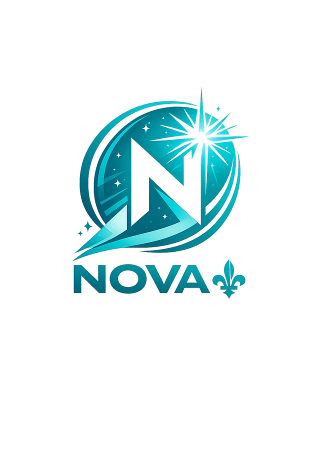

Comptabilité
Revenus, dépenses, fournisseurs et solde public lorsque des opérations financières existent et peuvent légalement être publiées.

Cette section rassemble les registres et contrôles publics du Projet Nova. Elle distingue les faits publiés, les engagements futurs, les validations externes encore nécessaires et les renseignements qui doivent rester protégés.
Revenus, dépenses, fournisseurs et solde public lorsque des opérations financières existent et peuvent légalement être publiées.
Rencontres publiques, consultations citoyennes, sujets abordés et suivis publiables sans exposer inutilement les personnes.
État réel des validations juridiques, électorales, financières, techniques, correctionnelles, de cybersécurité et d’accessibilité.
Les coordonnées, informations sensibles et préférences politiques d’une personne ne doivent pas être publiées simplement au nom de la transparence.
Les détails opérationnels qui créeraient une vulnérabilité réelle peuvent être retenus, à condition que cette retenue soit justifiable et limitée.
Un brouillon, une hypothèse ou une information non vérifiée ne doit pas être présenté comme un fait confirmé pour remplir artificiellement un registre.
Les valeurs ci-dessous reflètent uniquement les données réellement publiées dans les registres du site.
Le registre de conformité indique explicitement ce qui n’est pas encore autorisé, certifié, chiffré ou adopté. Cette distinction fait partie de la crédibilité du projet.